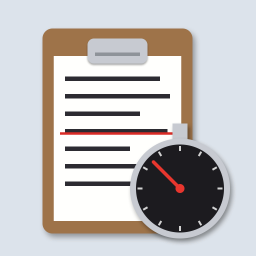

話すと何分か分かる原稿メモ
文字数から「話すと何分何秒か」と、目標の時間との差が分かる。
スピーチ・発表・面接の自己紹介・結婚式のあいさつ・朗読などの原稿を書くメモです。
- 話す時間と目標との差。書いている間ずっと「話すと 3:12（目標より +0:12）」と出します。長いときは「あと約60字けずります」と出ます
- 1分ごとの印。読む画面では、原稿の中の1分・2分…の所に赤い印が入ります。段落ごとの秒数と、ここまでの時間も並びます
- 読んで測る。声に出して読む前と後にボタンを押すと、自分の1分の字数を出し、その原稿の速さにできます（マイクは使いません）
- 文字数（全部・空白と改行を除く・原稿用紙の何枚分）も分かります
- 登録・課金はありません。原稿はこの端末の中だけに保存します。画面のいちばん下に小さな広告が出ます（文字を打っている間は出しません）